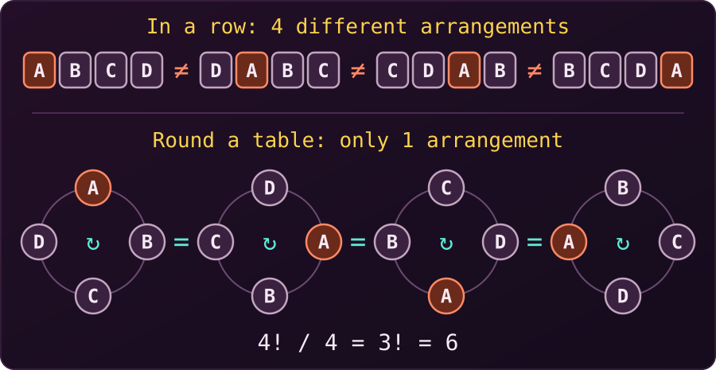
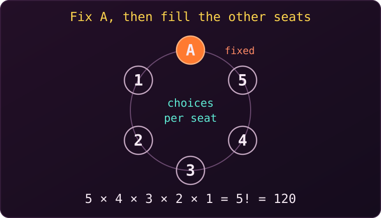
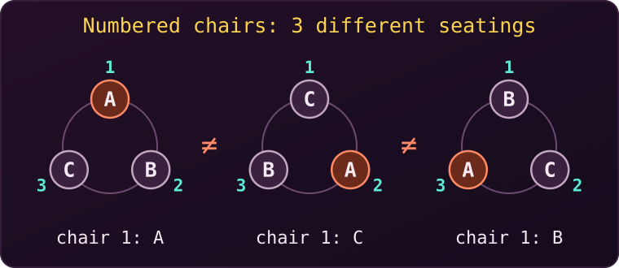
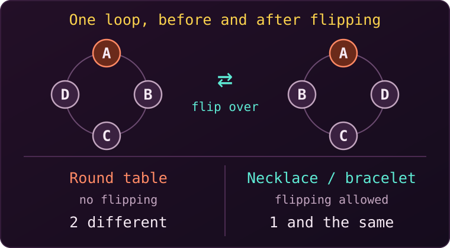
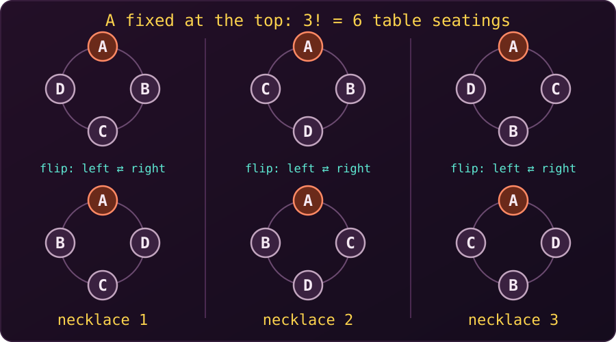
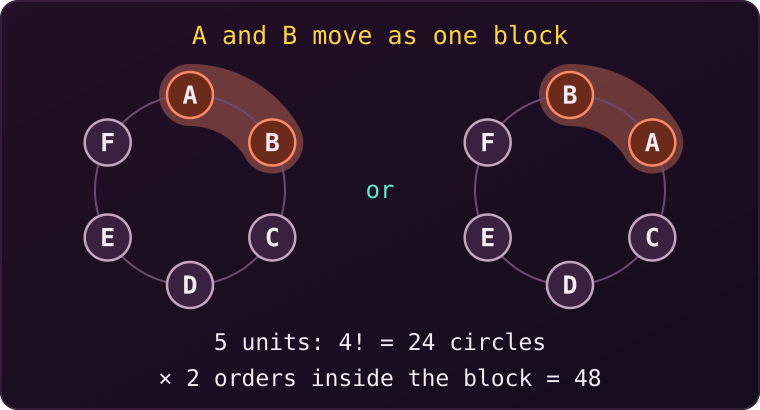
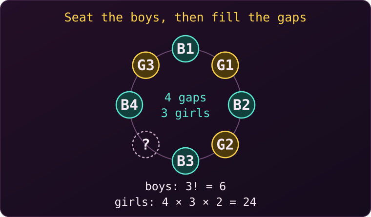
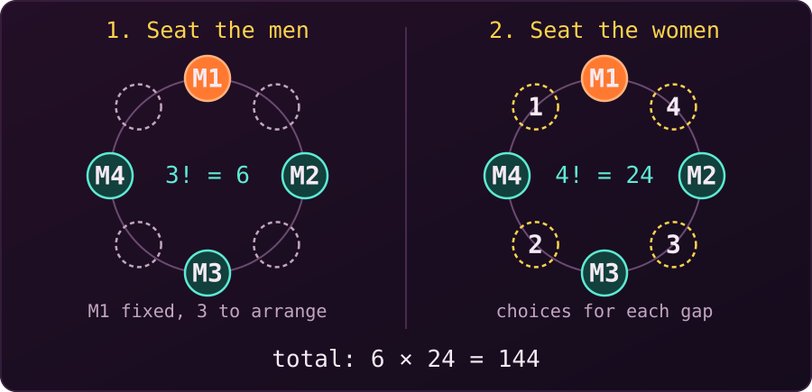
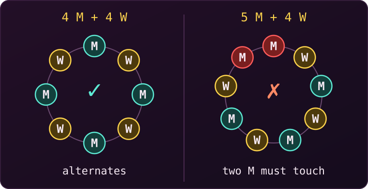
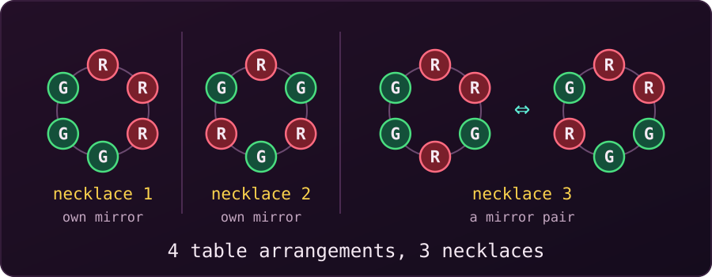

In how many ways can people sit around a round table? The answer differs from that for a row, and one idea explains why. We start with it and then add restrictions one at a time. New to arrangements in a row? See permutations and combinations with examples.
The core idea
In a row, the positions are different from one another (first, second, third, …), so \(n\) distinct objects can be arranged in \(n!\) ways.
In a circle, there is no first position. If everyone moves one seat in the same direction, each person keeps the same neighbours on the same sides, so we count it as the same arrangement. Each circular arrangement therefore appears \(n\) times among the \(n!\) row arrangements, as in the picture above:
\[ \frac{n!}{n} = (n-1)! \]
Fix one person
Another way to see it: only the positions relative to each other matter. So we seat one person anywhere and keep them there. This person now marks a starting point, and the remaining \(n-1\) seats are filled as in a row.

Example. 8 people can sit around a round table in \(7! = 5040\) ways.
Numbered chairs
If the chairs are numbered, it matters which chair each person gets. Moving everyone one seat gives a new seating, so we do not divide by \(n\). We count as in a row: \(n!\).

| 3 people | Number of seatings |
|---|---|
| Chairs not numbered | \(2! = 2\) |
| Chairs numbered | \(3! = 6\) |
Necklaces and bracelets
A necklace or bracelet differs from a table in one way: we can flip it over. Flipping swaps left and right, so an arrangement and its mirror image are the same object. Necklaces, bracelets and garlands are all counted this way.

| Round table | Necklace or bracelet | |
|---|---|---|
| Turn it round | same | same |
| Flip it over | not possible | same |
| \(n\) distinct objects | \((n-1)!\) | \((n-1)!/2\) |
The necklace formula needs \(n \ge 3\) (with 1 or 2 objects there is only 1 arrangement). With 4 distinct beads, the 6 table arrangements pair up into 3 necklaces:

Example. 6 different beads make \(\dfrac{5!}{2} = 60\) necklaces.
Some advanced combinatorics books separate the two words: there a “necklace” can only be turned round, while a “bracelet” can also be flipped. Unless a question says so, we flip both.
Sitting together
To keep two people together, we glue them into one block. We then have \(n-1\) units around the table, which gives \((n-2)!\) arrangements. Inside the block the two can swap places, so we multiply by \(2!\):
\[ 2!\,(n-2)! \]

Example. 6 people with A and B together: \(2 \times 4! = 48\).
The same method works for \(k\) particular people (with \(k < n\)). The block and the other \(n-k\) people make \(n-k+1\) units, and the block can be ordered in \(k!\) ways:
\[ k!\,(n-k)! \]
Example. 7 people with A, B and C together: \(3! \times 4! = 144\).
Sitting apart
For two people who must not be neighbours, it is easiest to subtract the “together” cases from the total:
\[ (n-1)! - 2\,(n-2)! \]
Example. 6 people with A and B apart: \(5! - 48 = 120 - 48 = 72\).
No two of a group adjacent: the gap method
Suppose 4 boys and 3 girls sit around a table and no two girls may be neighbours.

- Seat the boys first: \(3! = 6\) ways.
- They create 4 gaps, one between each pair of neighbouring boys.
- The girls take 3 of the 4 gaps, in order: \({}^4P_3 = 4 \times 3 \times 2 = 24\) ways.
Total: \(6 \times 24 = 144\).
In general, with \(m\) boys and \(g\) girls (\(g \le m\)):
\[ (m-1)! \times {}^mP_g \]
Alternating seats
For men and women to alternate all the way round, there must be the same number of each. Take 4 men and 4 women, and seat them in two steps.

- Men: the table is empty, so rotations look alike. We fix one man and arrange the other three: \(3! = 6\) ways.
- Women: the seated men now mark the places. The gap between M1 and M2 differs from the gap between M2 and M3, so the 4 women fill 4 different places: \(4! = 24\) ways.
\[ 3! \times 4! = 144 \]
Why not \(4! \times 4!\)?
We remove the effect of rotation once, because there is only one table to rotate, and seating the men already does that. Using \(4!\) for the men as well treats their four seats as different from each other. Then \(4! \times 4! = 576\) counts each seating 4 times, since moving everyone 0, 2, 4 or 6 seats keeps the same neighbours.
\[ \frac{4! \times 4!}{4} = 144 \]
With \(m\) men and \(m\) women, the answer is \((m-1)!\; m!\).
With 5 men and 4 women, strict alternation is impossible: going round the table, two men must end up side by side.

If the question only asks that no two women sit together, the gap method applies: \(4! \times {}^5P_4 = 24 \times 120 = 2880\).
In a row, 5 men and 4 women can alternate (M W M W M W M W M), because the two ends do not touch. This gives \(5!\,4! = 2880\) ways.
Identical objects
Now suppose some objects are alike: \(p\) of one kind, \(q\) of another, and so on, with \(n\) in total.
The shortcut and its condition
If \(p, q, \ldots\) have no common factor greater than 1, the number of table arrangements is
\[ \frac{(n-1)!}{p!\,q!\cdots} \]
Example. 3 red and 2 blue beads: \(\dfrac{4!}{3!\,2!} = 2\). The blue beads are either together or apart.
Flipping either pattern over gives the same pattern again, so there are also 2 necklaces. Dividing by 2 would wrongly give 1.
When the shortcut fails
With 3 red and 3 green beads, the formula gives \(\dfrac{5!}{3!\,3!} = \dfrac{10}{3}\), which cannot be a count. The reason is that some patterns repeat before a full turn: RGRGRG looks the same after turning two places.
So we count directly. There are \(\dfrac{6!}{3!\,3!} = 20\) row arrangements:
- 2 of them come from the repeating pattern
RGRGRG, giving 1 circular arrangement. - The other 18 fall into groups of 6 rotations, giving 3 circular arrangements.
That makes 4 table arrangements. Now we allow flipping and see which of them become the same:

So the count is:
- 2 patterns that look the same after flipping: 2 necklaces;
- 2 patterns that turn into each other: 1 necklace.
That is 3 necklaces from 4 table arrangements. In short, if \(T\) is the number of table arrangements and \(S\) is the number of them unchanged by flipping,
\[ \text{Necklaces} = \frac{T + S}{2} = \frac{4+2}{2} = 3 \]
When all beads are distinct and \(n \ge 3\), no pattern is unchanged by flipping (\(S = 0\)), and we are back to \(\dfrac{(n-1)!}{2}\). For larger problems, Burnside’s lemma does this kind of counting systematically.
One more example: two conditions
Six people A, B, C, D, E and F sit around a table. A and B must be together, while C and D must be apart.
- A and B together: \(2 \times 4! = 48\).
- A and B together, C and D also together: two blocks and two people make 4 units, so \(3! \times 2! \times 2! = 24\).
- Subtract: \(48 - 24 = 24\).
Quick reference
| Condition | Number of ways |
|---|---|
| \(n\) distinct, round table | \((n-1)!\) |
| \(n\) distinct, necklace or bracelet (\(n \ge 3\)) | \((n-1)!/2\) |
| Numbered chairs | \(n!\) |
| \(k\) particular people together (\(k < n\)) | \(k!\,(n-k)!\) |
| 2 particular people apart | \((n-1)! - 2(n-2)!\) |
| \(m\) boys, \(g\) girls, no two girls adjacent | \((m-1)!\;{}^mP_g\) |
| \(m\) men and \(m\) women alternating | \((m-1)!\,m!\) |
| Identical objects, counts with no common factor | \((n-1)!/(p!\,q!\cdots)\) |
| Necklace with identical objects | \((T+S)/2\) |
Common mistakes
- Using \(n!\) for a round table with unnumbered chairs.
- Forgetting to divide by 2 for necklaces and bracelets of distinct objects.
- Dividing by 2 blindly when some objects are identical.
- Adding instead of multiplying the \(k!\) orders inside a block. See when to add and when to multiply.
- Using subtraction for “no two adjacent” with three or more people: subtracting “all together” still leaves cases where two of them sit side by side. Use the gap method.